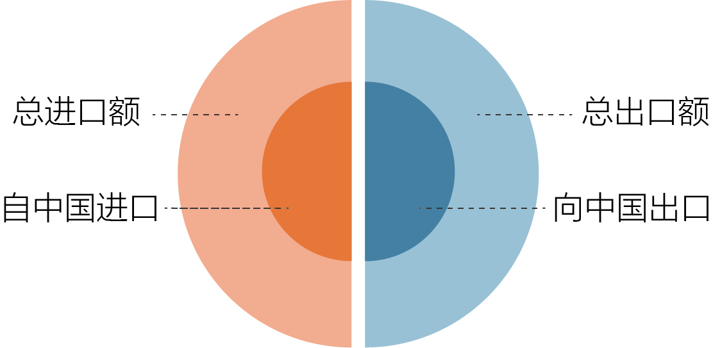

2000多年前，先辈筚路蓝缕，穿越草原沙漠，开辟出一条联通亚欧非的陆上丝绸之路；他们扬帆远航，穿越惊涛骇浪，闯荡出连接东西方的海上丝绸之路。古丝绸之路打开了各国友好交往的新窗口，书写了人类发展进步的新篇章。21世纪的此刻，崭新的“一带一路”上发生着什么？
2013年9月，国家主席习近平在哈萨克斯坦纳扎尔耶夫大学发表演讲，提出了共同建设“丝绸之路经济带”的倡议。同年10月,习近平在印度尼西亚国会发表演讲，提出共同建设“21世纪海上丝绸之路”。这二者共同构成了“一带一路”的伟大倡议。经过夯基垒台、立柱架梁的5年，共建“一带一路”正在成为我国参与全球开放合作、改善全球经济治理体系、促进全球共同发展繁荣、推动构建人类命运共同体的中国方案，也是当前中国推动区域合作、加快经济转型的新方略。
我们将根据2018年3月中国“一带一路网”上“各国概况”栏目中所列出的71个“一带一路”国家，拆解中国与它们的贸易往来合作，看看这条丝绸之路给彼此带来了什么？
2017年中国对全球的贸易总额达到41071.6亿美元，排名全球第一。
中国与71个“一带一路”国家的贸易总额为14386.4亿美元，占中国全球贸易总额的35%，是中国对外贸易的重要组成部分。
其中，亚洲是“一带一路”倡议的主要地区，44个亚洲国家是“一带一路”贸易的主力军，共占“一带一路”贸易额的83%。欧洲20个国家共占11%，大洋洲、非洲及拉美地区的7个国家占6%。

就进口额、出口额分别来看，2017年中国对“一带一路”国家的出口总额为7716.5亿美元，占中国全球出口额的34.1%。进口总额为6669.9亿美元，占全球进口额的36.2%，进出口额分布比较平均。
这张巨大的贸易地图，是怎样描画在这条蔓延千里的丝路上的呢？
“一带一路”国家中，中国出口额前十名： 韩国、越南、印度、新加坡、俄罗斯、马来西亚、泰国、印度尼西亚、菲律宾、阿联酋。
鼠标悬浮可查看各国家具体数据。
“一带一路”国家中，中国进口额前十名： 韩国、马来西亚、越南、泰国、俄罗斯、新加坡、沙特阿拉伯、印度尼西亚、南非、菲律宾。
鼠标悬浮可查看各国家具体数据。
韩国、越南、马来西亚、俄罗斯、泰国、新加坡、印度尼西亚、菲律宾八个国家既是进口额的前十位，也是出口额的前十位，它们是我国的主要贸易合作伙伴。八国中，除俄罗斯外都是亚洲国家，它们与我国地理位置接近，各方面合作往来频繁。
自2013年“一带一路”倡议提出以来，越南、泰国、菲律宾三国与中国的贸易总额持续上升，合作愈发密切。但其他5个国家与中国贸易额普遍在2015年、2016年出现下滑。分析认为，中国货物贸易下滑的主要原因是新兴市场国家的经济明显减速，需求变得低迷。此外，人民币兑美元汇率贬值、国际市场大宗商品价格下降，都造成了中国进出口贸易额下降。2017年，中国与“一带一路”国家的贸易总额扭转连续两年负增长局面，在这5个国家中都有体现。

“一带一路”倡议为中国进出口带来了更多的机会，已经成为全球贸易版图中至为重要的部分。对于71个“一带一路”国家而言，与中国的合作在本国的对外贸易中又占据怎样的地位呢？
这是2017年71个“一带一路”国家与中国进出口贸易额占其全球进出口总额的比例图，从中我们可以看出“一带一路”的经济往来对于这些国家进出口贸易究竟发挥着怎样的作用。
中国是“一带一路”八大主要贸易国家的重要进出口市场。进口方面，中国是韩国、新加坡、俄罗斯、泰国、越南、马来西亚的第一大进口来源国，越南和菲律宾自中国进口的比重也超过了30%。出口方面，中国是韩国、新加坡、俄罗斯和泰国的第一出口目的地，且韩国对中国的出口额比重超过30%。
塔吉克斯坦、缅甸、哈萨克斯坦、伊朗、吉尔吉斯斯坦、巴基斯坦、蒙古这七个国家自中国的进口量比重大于30%，主要集中在中亚地区，其进口贸易极大程度上依赖中国市场。
蒙古、土库曼斯坦、阿曼、缅甸、老挝、也门对中国的出口量比重大于30%，蒙古、土库曼斯坦更高达84%和83%，它们主要在亚洲大洋洲地区。其中蒙古、缅甸进出口比重都很高，中国是其重要的贸易伙伴。
罗马尼亚、阿塞拜疆、保加利亚、斯洛伐克、白俄罗斯、塞尔维亚、摩尔多瓦、不丹、马其顿、波黑，这些国家的进出口比重都小于5%，且集中在东欧地区。一是这些国家本身进出口体量不大，二是与中国距离较远，合作范围有限。
塔吉克斯坦、巴拿马、吉尔吉斯斯坦、孟加拉、哈萨克斯坦、巴基斯坦与中国贸易中，进口比重远大于出口，阿曼、蒙古、土库曼斯坦的出口比重远大于进口，且比例相差悬殊。它们主要是在中亚地区，与中国的进出口贸易结构不平衡。
“一带一路”倡议对大多数参与国家的对外贸易有重要的作用，庞大的数字背后是什么货品进出口最多，伴随着“驼铃阵阵”，这条丝绸之路上运送着什么样的宝藏？
根据海关HS2编码，2013年至2017年，85章、84章所代表的锅炉机器和电机电器设备一直位列“一带一路”进出口商品贸易额的前五位，27章的矿物燃料也保持在我国进口额的前五名。
从进口来看，矿物燃料进口量逐渐下降，锅炉机器则持续上升，从2015年开始超越矿物燃料成为进口额第一的商品。从出口来看，锅炉机器、电机电器、钢铁一直分别保持第一、第二、第三。我国与“一带一路”国家进出口商品的重点在重工业部门，同时贸易中也包含其他丰富的商品类型。
85章所代表的锅炉机器商品在“一带一路”国家的进口、出口中都占据重要位置，2017年进口额达1781.6亿美元，出口额达1798.8亿美元。从其主要来源国与出口国看，仍集中在与我国贸易往来最多的几个亚洲国家。韩国的出口占到整体的一半以上，从中国进口量也位居第一。越南、马来西亚、新加坡也是85章商品重要的进出口国家。印度对85章商品的进口额占中国出口总额的12%，但出口只有不到0.4%，中国在锅炉机器商品方面极大地满足了印度的需求。

2013年以来，中国致力于同“一带一路”国家发展经贸伙伴关系，贸易合作不断扩大，形成了互利共赢的良好局面。五年多来，世界经济暗流涌动，但我国始终以“一带一路”倡议为支点，坚持对外开放，积极推动经济全球化，促进贸易投资自由化和便利化。“一带一路”中的贸易合作，无论是对中国，对71个“一带一路”国家，还是对整个世界，都有着极大的意义。 “一带一路”倡议植根于丝绸之路的历史土壤，在当今焕发新的活力。贸易只是“一带一路”的一部分，这条通途上还将创造更多可能、更多辉煌。